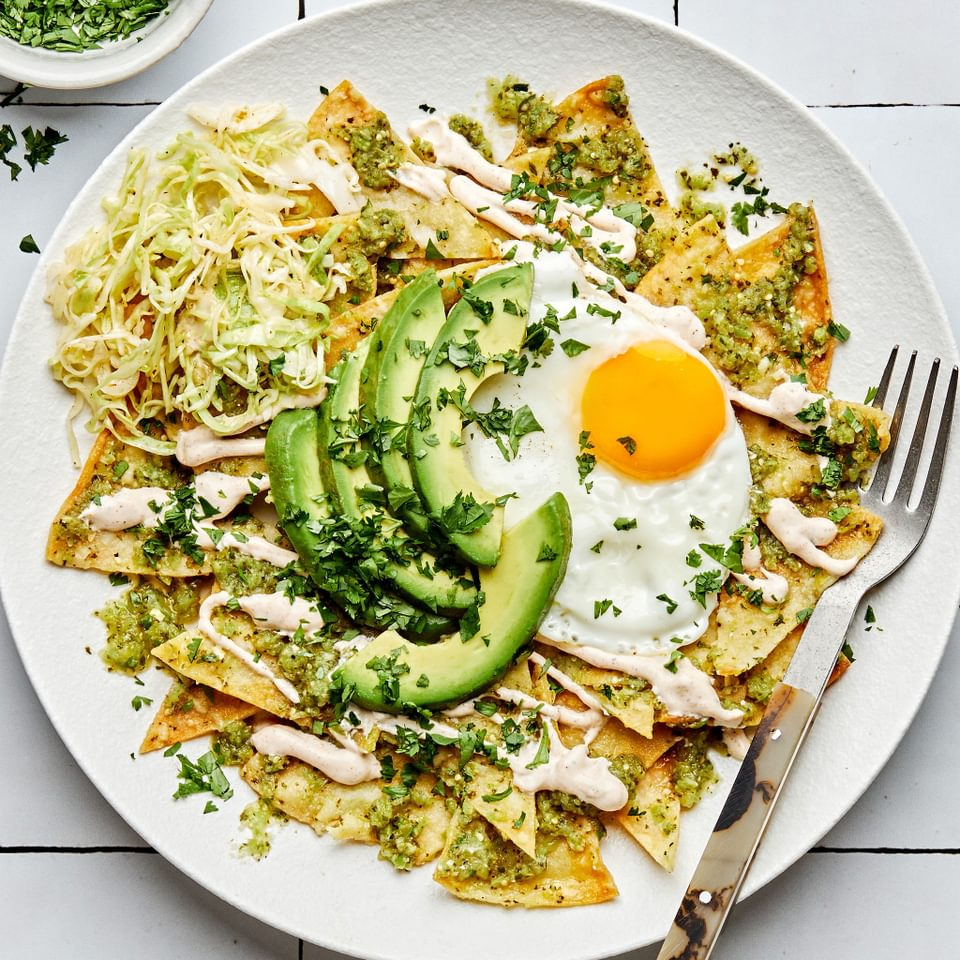

chilaquiles

Chilaquiles are a traditional mexican breakfast dish consisting of corn tortillas cut into quarters and lightly fried
chilaquiles, a Mexican dish consisting of strips or pieces of corn tortillas that are fried, then sautéed with green or red salsa, and topped with cheese, crema (a sweet, thin cream sauce), and onion. Pulled chicken may also be added during the cooking process, and casserole versions of the dish are popular. Beans, eggs, beef, and avocado are among the foods often served with chilaquiles.
It is typically eaten for breakfast or brunch, much like the Tex-Mex dish migas, which is made with scrambled eggs and tortilla strips. Chilaquiles was originally created as a way to use slightly stale leftover tortillas.
Ingredients
- Corn tortillas
- Canola oil
- Eggs
- Tomato salsa or tomatillo salsa
- Cheddar cheese shreeded
Steps
- Cut corn tortillas into triangles and beat eggs in a bowl.
- Use canola oil to lightly fry the tortillas. Fry on each side until crisp, then dry on paper towels.
- Scramble the eggs and transfer to a covered plate to keep them warm.
- Add the tortillas back to the skillet and cook with salsa until thickened. Add the eggs, stir to combine, and finally, top with shredded cheese.
- Serve with avocado crema, and enjoy